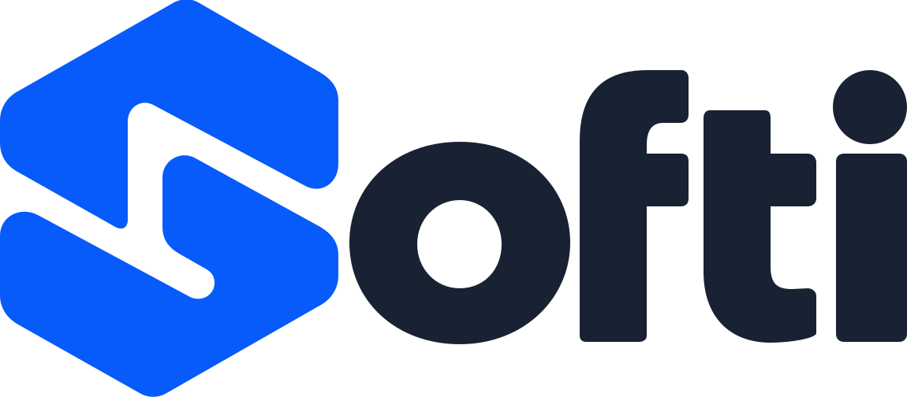

Partez d’un projet.
Ouvrez Softi et choisissez une application GUI ou Core. L’assistant prépare les fichiers pour commencer votre application.
Une interface graphique ou une application console
Sans installation · Sans compte pour commencer
Donnez une interface à vos idées. Dessinez-la, écrivez sa logique en C++ et téléchargez votre application Windows ou Linux. Un seul espace pour créer : Softi.
Un navigateur récent. Vos idées. Vous pouvez commencer.
Un atelier. Toutes les étapes.
Passez du Designer au code, de l’installeur à la documentation. Ces images sont directement issues de Softi.
Placez vos widgets, ajustez leurs propriétés et retrouvez le formulaire dans votre projet C++.
Place à vos idées
Ouvrez Softi et choisissez une application GUI ou Core. L’assistant prépare les fichiers pour commencer votre application.
Une interface graphique ou une application consoleDessinez votre interface, connectez les widgets à vos méthodes C++ et lancez votre application dans le navigateur pour l’essayer.
Designer → C++ → ExécuterSélectionnez Windows ou Linux. Téléchargez l’exécutable natif, ou générez un installeur avec votre application et ses fichiers.
Windows .exe / Setup.exe · Linux ELF / .runUn logiciel grandit avec ses usages
Une première interface, un outil du quotidien, une idée que vous vouliez essayer depuis longtemps. Mettez Softi à l’épreuve et racontez-nous votre usage.
Un bug expliqué, une capture d’écran ou le parcours qui vous semblerait naturel nous aident à améliorer le logiciel.
Faire un retour ou signaler un bug ↗Décrivez les étapes, le résultat attendu et ce qui s’est passé. Vous pouvez joindre une capture au ticket GitHub.
Avant de commencer
La création d’un projet, le Designer, l’édition du code et la compilation fonctionnent directement dans un navigateur récent. Une application Windows ou Linux téléchargée se lance sur son système cible.
Oui. Windows x64 produit un exécutable .exe ou un installeur Setup.exe. Linux x64 produit un exécutable ELF ou un installeur .run. Les installeurs Windows ne sont pas signés ; l’installation Linux se fait pour votre compte utilisateur.
Les projets enregistrés restent dans le stockage local de ce navigateur. Exportez votre projet pour garder une copie séparée ou le déplacer vers un autre navigateur. Effacer les données du site supprime aussi ses projets locaux.
La compilation du projet et la génération des installeurs se font dans votre navigateur. Le site fournit les fichiers du compilateur et des SDK. Un assistant IA connecté utilise son service configuré séparément.
Oui. Le copilote IA se connecte via le bridge local IaAssistant et votre connexion fournisseur. Il est facultatif : l’éditeur, le Designer et le compilateur fonctionnent sans lui.
L’interface s’adapte aux petits écrans. Un ordinateur avec clavier et souris reste plus confortable pour écrire du C++ et travailler sur des interfaces complexes.
À vous de créer la suite
Directement dans votre navigateur. À votre rythme.